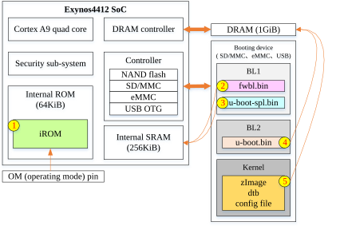
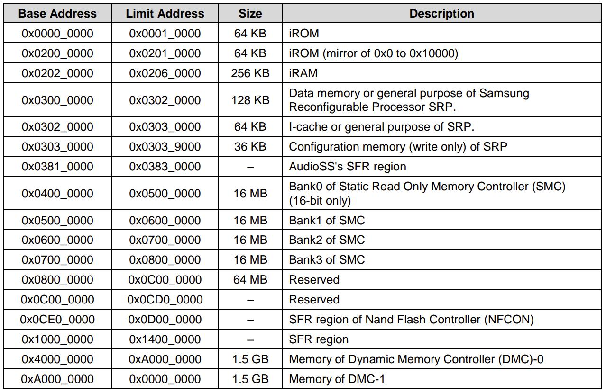
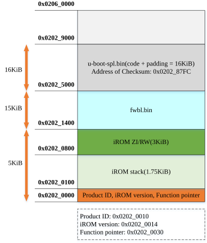
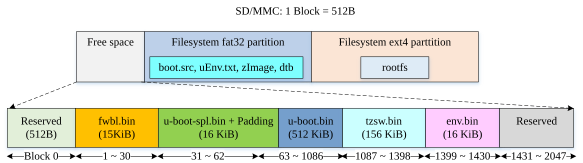
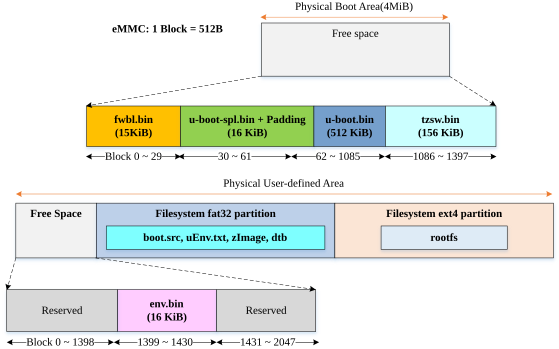

通常所谓的U-Boot升级不过是在芯片原厂提供的BSP基础上增添部分外设适配代码，尽管这样做法能减少移植的难度，但芯片原厂提供的U-Boot版本一般较陈旧，极可能未实现新功能和新需求，比如设备树。通常，启动加载程序的移植是嵌入式Linux系统移植中首要面临的挑战。由于移植过程常涉及源代码的分析和修改，甚至添加新代码，因此需要在移植过程中逐渐提高三种基本能力：阅读芯片手册的能力、阅读规范文档的能力及阅读源代码的能力。
开发环境
- Host OS: ubuntu-16.04-desktop
- Target Development Board: Single Board Computer「SBC」 based on Exynos4412 SoC
- 9tripod X4412「深圳九鼎创展有限公司」
- TOPEET iTOP4412「讯为」
- Cross Compiler Toolchain: arm-linux-gnueabihf-
- gcc version 6.4.1 20171012 (Linaro GCC 6.4-2017.11)
- u-boot: u-boot-2019.07
概述
在移植之前，先从官方地址下载特定的U-Boot源代码，如本文使用的u-boot-2019.07。深入理解芯片的启动过程、地址空间映射「memory map」和映像布局对移植来说是至关重要的。本文重点分析了Exynos4412 SoC的启动，为后续的移植做好铺垫。Exynos4412 SoC支持以下启动设备：
- NAND flash
- SD/MMC
- eMMC
- USB
启动过程
Exynos4412 芯片内部包含一个64KiB ROM和一个256KiB SRAM，并且在ROM中固化了一份bootrom程序，也被称为iROM。内部SRAM用来存储iROM执行时的临时变量、数据及后续加载的fwbl.bin和u-boot-spl.bin代码。Exynos4412芯片的启动过程主要包含BL1、BL2和Kernel三个阶段，其中映像文件的加载执行顺序如图1所示。

图1 映像加载执行的顺序
- iROM被固化在内部ROM中，其主要完成功能包括：关闭看门狗、禁止中断及关闭MMU和数据缓存、打开指令缓存、刷新TLB和清除L2缓存。除此之外，使其他CPU核心进入idle模式，只保留CPU0继续执行后面的代码。接着获取reset状态、设置系统时钟分频系数和PLLs。最后根据读到的OM引脚配置来决定启动媒介设备「boot media device」，并从此启动设备将固件fwbl.bin加载到内部SRAM并跳转执行。
- 固件fwbl.bin初始化IRQ和SVC模式的栈位置，若是从LPA「low power 」状态唤醒，将直接跳转执行u-boot-spl.bin，否则从启动媒介设备中加载u-boot-spl.bin至内部SRAM中。接着判断是不是安全启动，若是就对u-boot-spl.bin映像进行签名校验，若不是就只对u-boot-spl.bin映像进行CRC校验，验证之后跳转执行u-boot-spl.bin代码，更详细的过程参考[1]。
- u-boot-spl.bin也要初始化IRQ和SVC模式的栈位置，并且关闭MMU和D-Cache，不过其主要功能是配置系统时钟（clock）和初始化动态内存控制器（dynamic random-access memory controller，DRAMC）。如果需要早期的串口调试功能，那么也是由它实现。若是从LPA或睡眠状态唤醒，将直接执行内存中的u-boot.bin映像，否则从启动设备中加载u-boot.bin映像至内存中并直接跳转执行。由于不同开发板针对不同需求而采用不同的DDR SDRAM芯片，所以芯片的系统时钟和动态内存控制器的配置也要依据开发板或单板的不同做适当的调整，这也正是单独分离出这样一个映像文件的原因。
- u-boot.bin设置MMC、UART、USB、LCD、Network等外设实现各种高级的启动引导功能，比如TFTP升级、启动显示等，然后进入命令菜单等待用户输入命令或执行bootcmd环境变量指定的命令实现自动加载Linux kernel及设备树文件到内存，之后移交控制权给kernel。
- zImage、dtb等文件完成Linux操作系统的启动和设置，为应用程序提供一个执行环境。内核启动流程超出本文的讨论范围，故不做深入探讨。
综上所述，启动引导过程「BoardLoader」分为两个阶段：BL1和BL2，在启动第一阶段涉及fwbl.bin和u-boot-spl.bin两个映像文件，其中fwbl.bin是由三星半导体提供的，而且没有源代码，只能通过文档大致了解它完成了哪些事情。与之相反，u-boot-spl.bin是通过开源U-Boot工程生成的，我们能够掌控代码的执行内容，便于定制化。在启动第二阶段只涉及u-boot.bin映像文件，也是使用U-Boot工程创建的，根据需求能够灵活地修改扩展。
为什么在启动的第一阶段（BL1）需要单独分离出fwbl.bin和u-boot-spl.bin两个文件？
这样设计的目的其实就是为了使芯片相关的配置过程与平台相关的配置过程完全解耦。无论芯片被使用在什么平台上，芯片配置固件都要具有将平台配置代码加载到内部SRAM并跳转执行的功能，fwbl.bin都由芯片制造商实现，但集成制造商通常都要求能够简单方便地修改平台配置以致于定制出差异化的产品，比如系统时钟的修改、内存芯片的改变等，这些设置都需要能在u-boot-spl.bin中实现。这样做的好处就使集成制造商能够根据具体需求灵活地使用自己定制的启动映像，从而不需要每次硬件选型变更后寻找芯片制造商的协助与授权。
地址空间映射

图2 Exynos4412 SoC的地址空间映射
如图2所示，可看出芯片将物理地址空间划分成多个内存区间「region」，分别有不同的用途。比如该芯片最大只能支持3GiB的内存。

图3 关于内部SRAM的内存映射
由图 3所示，可看出iROM、fwbl.bin与u-boot-spl.bin各自占用的地址空间。内部SRAM的地址空间是从0x02020000 开始到0x02060000结束。由于内部ROM是只读存储器，因此需要将 0x02020000 ~ 0x02021400的地址空间保留给iROM程序所使用，预留大小为5KiB，用于存放iROM的全局变量（ZI/ZW即全局未初始化变量与全局已初始化变量）、局部变量（stack）等。接下来从0x02021400处开始到0x02025000结束属于fwbl.bin所占用的地址空间，由此可认为fwbl.bin的第一条指令在执行期间是存放在0x02021400地址处，这段地址空间的大小为15KiB。紧接着从0x02025000开始到0x02029000结束的这段空间属于u-boot-spl.bin所占用的地址空间，其大小为16KiB，因此可认为在运行过程中u-boot-spl.bin的第一条指令将存放在0x02025000地址处。
牵涉位置无关代码（Position-independent code，缩写PIC）的问题是移植U-Boot的难点，即运行地址与加载地址的区别。u-boot-spl.bin的运行地址在编译时是一个很重要的信息，决定得到的u-boot-spl.bin代码能否在芯片上正确运行。运行地址也叫链接地址，是程序指令定位所用的绝对地址，是在编译链接时必须指定的地址。加载地址指的是程序代码放置的位置，大多数情况下运行地址等于加载地址。通常用于生成u-boot-spl.bin的源代码包含非PIC的代码，并且在编译时指定的运行地址与存放映像用的加载地址不一致，当执行到u-boot-spl.bin的位置有关代码时其实际存放地址与依据运行地址计算的地址不吻合，此时u-boot-spl.bin代码将不能顺利执行下去。实际上，u-boot-spl.bin是由fwbl.bin加载到内部SRAM的0x02025000地址处，又由于fwbl.bin是芯片原厂提供的不开源的二进制程序，暂时无法修改fwbl.bin程序的执行行为，因此在编译生成u-boot-spl.bin时必须正确指定u-boot-spl.bin的链接地址为0x02025000，只有这样含有非PIC的u-boot-spl.bin代码才能顺利运行。
在配置编译生成u-boot映像时，若打开了SPL相关配置选项，则在编译完成后会在映像构建目录build下创建spl子目录，并在此子目录下创建与SPL相关的各种格式的映像文件和符号表，如表1所示。
按理论说，得到的ELF格式u-boot-spl映像也可以被加载执行，但由于fwbl.bin代码的行为限制，fwbl.bin不能加载执行其他格式的映像，所以一般常用<board_name>-spl.bin，其中<board_name>使用开发板的特定名称代替，例如用x4412代替后即是x4412-spl.bin，注意：启动第一阶段涉及的u-boot-spl.bin可以指的是这里的x4412-spl.bin。
映像布局
在运行时，启动加载程序确切知道各种映像在存储设备SD或eMMC中的放置位置才能正确地从启动设备中获取启动映像并执行，并顺利将控制权转交给Linux内核。

图4 在SD卡上的映像布局
SD卡的扇区大小为512B，编号0扇区为保留扇区，用来存放分区表的数据（MBR）。接下来的15KiB的空间存放fwbl.bin，比如X4412的BSP所提供fwbl.bin是15KiB，但iTOP4412的BSP所提供的fwbl.bin为8KiB。fwbl.bin后面要紧跟着存放u-boot-spl.bin（或x4412-spl.bin），两者之间不能存在空隙，其实u-boot-spl.bin的实际大小只有14KiB，因此u-boot-spl.bin与u-boot.bin之间存在2KiB的间隙，建议将此存储空间置零，后面几个映像文件可以根据实际情况自己安排适当调整位置。如图4所示，显示了X4412开发板所用的映像布局。这些映像文件是直接使用dd命令烧录至裸金属的物理存储空间，并不是存放在SD卡上的基于文件系统的逻辑分区内，但后面的kernel和dtb文件任然需要放入文件系统vfat32格式化的分区内，根文件系统映像存放入ext4格式化的分区内。

图5 在eMMC上的映像布局
eMMC存储设备一般拥有多个独立的物理存储空间，每个硬件分区都是独立编址的。通常情况下，Boot Area Patitions存放启动加载程序，User Data Area存储内核映像、设备树和根文件系统等数据。从eMMC启动时，X4412开发板采用的映像布局如图5所示。更详细的关于eMMC的工作原理及分区，请参考[6]和[7]。
不管选择从哪个启动设备启动，同样的映像只是在不同启动设备上的存放位置有变化。若设置启动设备为SD卡，则映像需要按照SD卡的存放布局放置。若eMMC被设置为启动设备，则映像就按照eMMC的空间布局存放。尽管图片中显示的内容都是与X4412相关的，但是原理和思想都是相似的，同样适用于iTOP4412开发板。